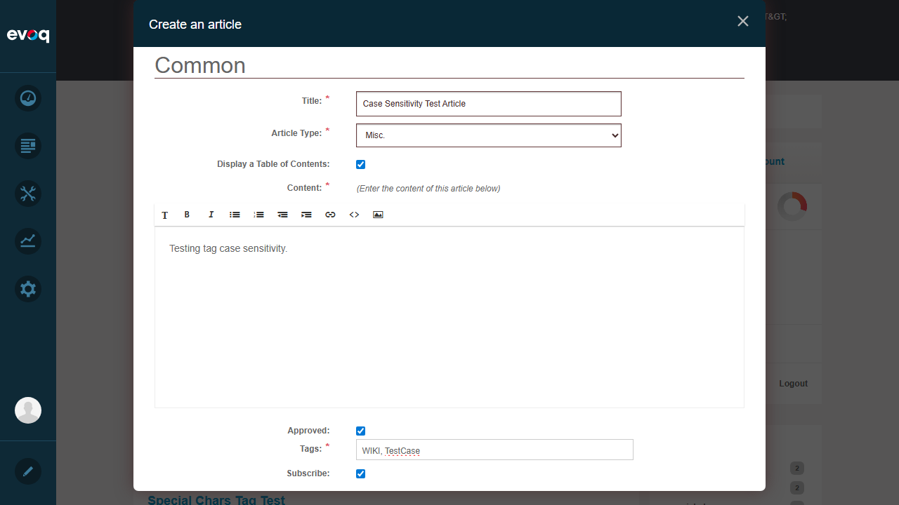

Objective: Verify how the system handles tag case (uppercase vs lowercase)
Steps:
Observe all tags in the tag cloud
Note that all tags are displayed in lowercase
Attempt to create article with uppercase tags "WIKI, TestCase"
Verify system behavior
Result: Tags are case-insensitive. The system normalizes all tags to lowercase as evidenced by the tag cloud displaying all tags in lowercase format.

Attempting to add uppercase tags "WIKI, TestCase"
Tag cloud showing all tags normalized to lowercase
Test 8: View Tag Cloud
Status:PASS
Objective: Verify that tag cloud is displayed with tag counts
Steps:
Navigate to Wiki module main page
Observe sidebar "Tags" section
Verify tags are displayed with article counts
Verify clicking tags filters articles
Result: Tag cloud displays in the right sidebar with counts (e.g., "metadata-test (2)", "wiki (2)", etc.). Clicking tags properly filters the article list.
Tag cloud in sidebar showing tags with counts
Observations
Tag Auto-complete: The code suggests tag auto-complete functionality exists (uses tag input libraries), but no visible auto-complete dropdown appeared during testing. This may require specific configuration or the feature may be disabled.
Tag Normalization: All tags are normalized to lowercase. This ensures consistent tag matching regardless of how users type them.
Special Character Support: The system properly handles and URL-encodes special characters in tags (@ becomes %40, # becomes %23, etc.).
Tag Chips: When editing articles, tags appear as chips with remove buttons, providing good UX for tag management.
Article Validation: Article titles must be unique - attempting to create duplicate titles results in a 406 error.